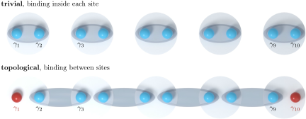

Advanced Quantum Materials 2027 · All lectures · Lecture notes
Session 5. Superconductivity, Nambu Representation and Majorana Physics
5.16 The Kitaev chain as the minimal model with isolated Majoranas
The simplest superconductor that can host isolated Majoranas is also one of the simplest superconducting Hamiltonians that we can write, which is a one-dimensional spinless chain with nearest-neighbor hopping and nearest-neighbor pairing,
\[H_{\text{Kitaev}} = -t\sum_n \left(c_n^\dagger c_{n+1} + \text{h.c.}\right) - \mu\sum_n c_n^\dagger c_n + \Delta\sum_n \left(c_n c_{n+1} + c_{n+1}^\dagger c_n^\dagger\right). \tag{5.19}\]
Here the pairing has to be on a bond and not onsite. For spinless fermions, an onsite term \(c_n c_n\) vanishes identically because of the Pauli principle (\(c_n^2=0\)), so the simplest allowed pairing is the nearest-neighbor term above. After a Fourier transform, the dispersion and the pairing become
\[\varepsilon(k) = -2t\cos k - \mu, \qquad \Delta(k) = 2i\Delta\sin k, \tag{5.20}\]
so the anomalous term is explicitly odd in \(k\). As (5.12) already tells us, this means that this is necessarily a superconductor of spin-triplet type, here a spinless p-wave one, which agrees with the fact that the onsite channel is forbidden by the Pauli principle.
Now let us set \(\mu=0\) and go to the special point \(\Delta=t\), and let us substitute the Majorana decomposition (5.17)-(5.18) at every site, \(c_n = \frac{1}{2}(\gamma_{2n-1}+i\gamma_{2n})\). We do this substitution in both the hopping and the pairing term. The algebra is direct but a bit long, and it uses the anticommutation relations of the \(\gamma\)’s, so we suggest that you check it yourself. The two terms combine so that every \(\gamma_{2n-1}\gamma_{2n+2}\) contribution cancels exactly between hopping and pairing, and the result is very simple,
\[H_{\text{Kitaev}}\Big|_{\Delta=t,\ \mu=0} = it\sum_{n=1}^{N-1} \gamma_{2n}\,\gamma_{2n+1}. \tag{5.21}\]
Every Majorana operator \(\gamma_2, \gamma_3, \gamma_4, \dots, \gamma_{2N-1}\) appears in this sum, paired between neighboring sites, but the first Majorana, \(\gamma_1\), and the last one, \(\gamma_{2N}\), do not appear at all. They are completely absent from the Hamiltonian, so they cost zero energy and are completely decoupled from the rest of the system. This is the same structure that we saw in the SSH model of the topological-band-structure session, in its dimerized strong-coupling limit. There, at full dimerization, the bulk forms bonding and antibonding dimers, while one remaining site at each end decouples and gives a zero-energy edge mode. The Kitaev chain in (5.21) is this same structure, written in terms of Majorana operators instead of ordinary fermion operators, and the two decoupled end Majoranas play the role of the two decoupled end sites of the SSH model. We do not derive the SSH model again here, and we only recognize it in terms of a new set of operators. Figure 5.5 shows which Majorana is bound to which, in this phase and in the trivial one.

At \(\Delta=t\) and \(\mu=0\) the chain has the dispersion \(E(k)=\sqrt{\varepsilon(k)^2+|\Delta(k)|^2}\) with (5.20). How does the bulk energy depend on \(k\)?
Show the answer
The correct option is B.
Here \(\varepsilon=-2t\cos k\) and \(|\Delta(k)|=2t|\sin k|\), so \(E^2=4t^2(\cos^2k+\sin^2k)=4t^2\). All bulk modes have the same energy \(2t\), which matches the dimers \(\gamma_{2n}\gamma_{2n+1}\) of (5.21).
Notebook check-in: session5.ipynb, “Emergence of Majorana modes as a function of the size of the superconductor” (Core)
Build the Kitaev chain of (5.19), diagonalize it at the fine-tuned point \(\Delta=t\), \(\mu=0\), and check directly, as the system size grows, that two states are pinned exactly to zero energy and are localized at the two ends. These are the two decoupled Majoranas \(\gamma_1\) and \(\gamma_{2N}\) predicted by (5.21).